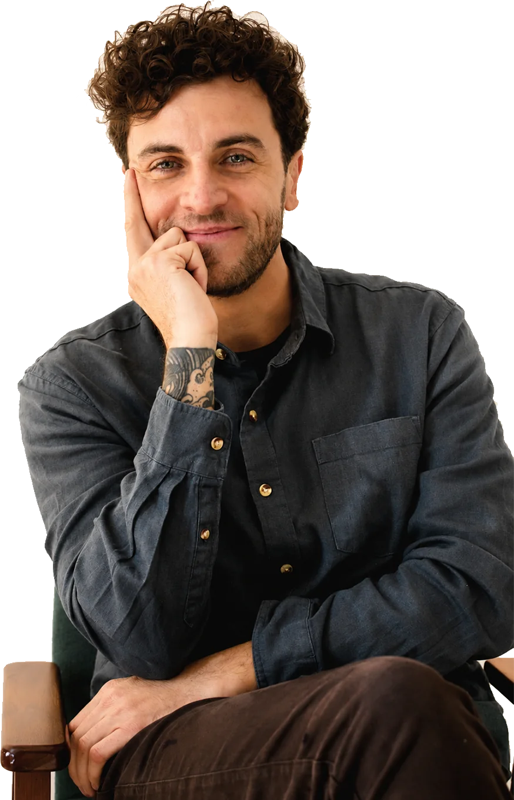

Existe algo que não passa e que os
recursos habituais já não conseguem resolver.
Existem sentimentos que retornam. Relações que se repetem. Escolhas que contradizem o que desejamos. Sofrimentos que permanecem mesmo depois de compreendidos.
A psicanálise não oferece uma explicação pronta para isso.
Oferece um espaço onde cada pessoa
pode construir o seu próprio entendimento.
O sofrimento em silêncio
Às vezes, o sofrimento não chega fazendo barulho.
Chega em pequenos movimentos.
Na sensação constante de ansiedade.
Na dificuldade de construir ou manter relações.
Na repetição de situações que parecem sempre terminar do mesmo jeito.
Na compulsão. Na culpa. Na autocobrança.
Na impressão de estar vivendo uma vida que deixou de fazer sentido.
Ou simplesmente naquela pergunta difícil de responder:
"Por que isso continua acontecendo comigo?"
Nem sempre existe uma resposta imediata.
E talvez essa não seja a primeira pergunta que
a análise procura responder.
Antes disso, existe um caminho de escuta.
Sem respostas prontas
A psicanálise não oferece respostas prontas.
Oferece um espaço onde perguntas podem, finalmente, ser escutadas.
Vivemos cercados por respostas rápidas. Métodos. Passos. Explicações. Conselhos.
Mas algumas experiências humanas não podem ser reduzidas a fórmulas.
Cada pessoa constrói sua história de maneira singular.
Cada sofrimento tem sua própria lógica.
Cada palavra carrega sentidos que pertencem apenas a quem a diz.
Por isso, a psicanálise não trabalha com protocolos. Trabalha com o que é único: o que aquele sujeito específico traz, repete, cala.
Não para apagar sua história. Mas para se relacionar com ela de outra maneira.
O tempo de cada um
Uma escuta que respeita o tempo de cada pessoa.
Nem toda dor consegue ser nomeada logo no início. Nem toda compreensão acontece de uma vez.
Assim como uma história não é construída em um único capítulo, também não é possível compreender uma vida a partir de um único encontro.
O processo analítico acontece no tempo de cada pessoa. Sem pressa. Sem roteiro.
Ao longo das sessões, palavras, lembranças, silêncios, sonhos, afetos e repetições passam a ocupar um lugar importante.
Pouco a pouco, aquilo que antes parecia apenas sofrimento pode revelar aspectos da própria história que ainda não haviam encontrado espaço para existir.
É nesse movimento que novos sentidos podem surgir, não porque alguém os oferece, mas porque passam a ser construídos por quem vive essa experiência.
“Da incapacidade duradoura de viver à capacidade de viver a existência de forma duradoura.”

Sou Filipe Istvandic
Uma trajetória construída entre diferentes campos do saber.
Minha trajetória profissional soma mais de 20 anos, construída a partir de percursos distintos, unidos por um mesmo interesse: compreender o sofrimento humano e suas relações com a linguagem, onde essas dimensões escapam às explicações imediatas.
Antes de me dedicar integralmente à psicologia e à psicanálise, atuei em exatas — engenharia e finanças. Essa experiência ampliou minha compreensão sobre os impasses subjetivos presentes nas organizações e na vida profissional, e sobre os modos singulares de responder às exigências da vida contemporânea.
Foi na psicanálise que encontrei um campo capaz de sustentar uma escuta orientada pelo compromisso com a singularidade de cada sujeito, e com a verdade que se inscreve em seu modo de falar, desejar e sofrer.
Hoje, minha prática é sustentada pela formação permanente, pela supervisão clínica, pelo estudo contínuo da obra de Freud e Lacan, e pela experiência da própria análise, elementos indissociáveis da ética que orienta o trabalho psicanalítico.
Compreendo a clínica como um espaço em que a palavra pode produzir deslocamentos, possibilitando a cada pessoa construir uma relação menos alienada com seu sintoma, seu desejo e sua própria história.
- Psicólogo
- Universidade São Judas Tadeu (2022)
- Formação em Psicanálise
- CEP (2024)
- Supervisão
- com William Zeytoullian (Instituto D'alma) e Laura Ramalho
- 7 anos de clínica
- com adolescentes e adultos
- Palestrante
- anual de prevenção ao suicídio em instituições públicas e privadas
- CRP 06/213048
Antes de começar, uma conversa.
O trabalho começa com um período de entrevistas iniciais, em que analista e paciente avaliam juntos se há indicação para dar início ao processo. Não há compromisso antes desse momento.
- Duração da sessão
- 50 minutos, podendo variar para mais ou para menos
- Frequência
- Mínima de uma vez por semana
- Modalidade
- Presencial (Barra Funda, São Paulo) ou online
- Atendimento online
- Todo o Brasil e o mundo
- Valor
- Combinado nas primeiras conversas
- Cobrança
- Por sessão
- Pagamento
- Pix ou dinheiro
- Política de falta
- Faltas são cobradas
- Cancelamento/remarcação
- Com 24h de antecedência
O Conselho Federal de Psicologia proíbe garantias de resultado ou cura. O que se pode oferecer com segurança: sigilo, presença, formação sólida e um espaço que respeita o tempo de cada pessoa.
Se você chegou até aqui
talvez já saiba que quer conversar.
A sessão inicial é só para isso: conversar, sem compromisso.
Agendar uma primeira conversa- +55 11 97012-6488
- filipeistv@gmail.com
- Endereço
- R. Vitorino Carmilo, 453 — Barra Funda/Santa Cecília, São Paulo – SP, 01153-000
A 10 minutos da estação Marechal Deodoro, linha vermelha. - Horário
- Segunda a quinta, das 8h às 22h
- @filipeistvandic